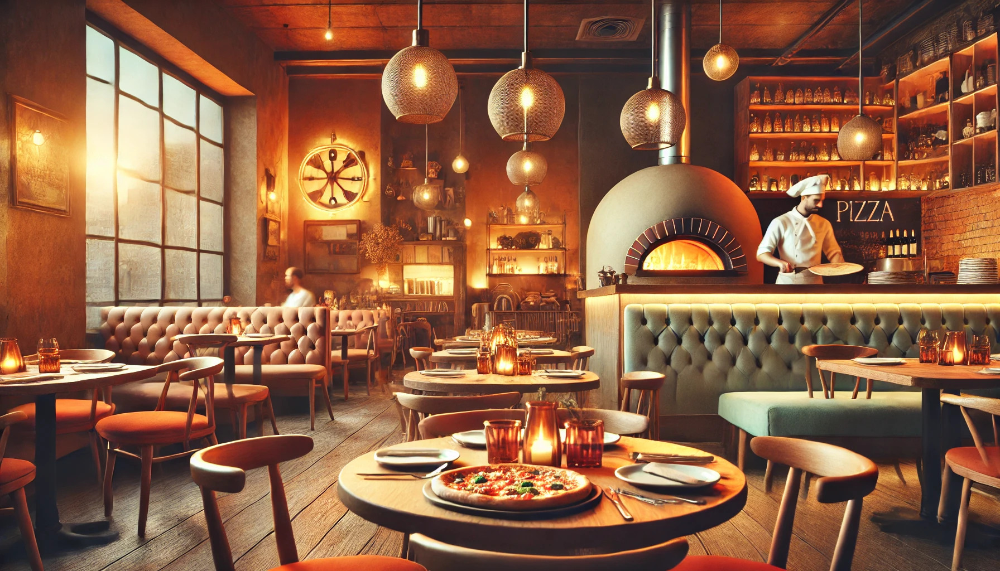

O nama
Upoznajte se sa nama, ovo je naša priča.
|  | Dobrodošli u Ujninu Kujnu, mesto gde se spajaju ljubav prema tradiciji i savremeni pristup kuvarstvu. Smeštena u srcu Kikinde, naša picerija je simbol porodične tradicije koja traje od 2006. godine. Počeli smo kao mali fast food, a kroz godine truda i posvećenosti izrasli u omiljeno odredište ljubitelja dobre hrane. U Ujninoj Kujni, gosti mogu uživati u bogatom meniju koji uključuje sve od tradicionalnih jela, preko specijaliteta naše kuhinje, pa sve do popularnih pizza koje su postale zaštitni znak našeg restorana. Atmosfera našeg restorana je inspirisana retro stilom, što stvara prijatan ambijent u kojem se svaki posetilac oseća kao kod kuće. |
| Bilo da dolazite sa porodicom, prijateljima ili poslovnim partnerima, naš cilj je da vam pružimo nezaboravno iskustvo. Posvećeni smo tome da vam svakim zalogajem donesemo miris domaće kuhinje i topli ugođaj. Dođite u Ujninu Kujnu i otkrijte zašto smo omiljeni restoran u Kikindi, i kako smo stekli poverenje i ljubav svih naših gostiju. Ujnina Kujna - Uvek tu, u srcu Kikinde, sa ljubavlju pripremljenim jelima i toplim dočekom za svakog gosta. |
Istorija Pizze
Pizza je jedno od najpoznatijih jela na svetu, a njena istorija seže hiljadama
godina unazad. Koreni pizze mogu se pratiti do antičke Grčke i Rima, gde su ljudi
pekli ravne hlebove i premazivali ih maslinovim uljem, začinima i drugim jednostavnim
dodacima. Međutim, moderna pizza kakvu poznajemo danas potiče iz Napulja, Italija,
tokom 18. i 19. veka. U to vreme, siromašni stanovnici Napulja razvili su recept za
jeftino, hranljivo jelo koje se sastojalo od tankog testa prekrivenog paradajzom,
maslinovim uljem, sirom i bosiljkom.
Jedan od ključnih trenutaka u istoriji pizze dogodio se 1889. godine, kada je kuvar
Rafaele Esposito pripremio "pizzu Margherita" u čast kraljice Margarite od Savojske.
Njegova kreacija, ukrašena paradajzom, mocarelom i bosiljkom, simbolizovala je boje
italijanske zastave i stekla veliku popularnost. Ubrzo, pizza je postala omiljeno
jelo ne samo u Italiji već i širom sveta.
Tokom 20. veka, italijanski imigranti doneli su pizzu u Ameriku, gde je stekla
ogromnu popularnost i doživela brojne inovacije, poput čikaške deep-dish pizze i
njujorške tanke kore. Danas, pizza dolazi u bezbroj varijanti i prilagođava se
ukusima različitih kultura. Ipak, njena suština ostaje ista – jednostavno, ukusno
i univerzalno jelo koje okuplja ljude za stolom, bilo da je pripremana u
tradicionalnim pećima na drva ili naručena za kućnu dostavu.
Pizza je postala jedno od omiljenih jela u Srbiji,
prilagođeno ukusima domaćih potrošača. Iako pizza ima svoje poreklo u Italiji,
u Srbiju je stigla tokom druge polovine 20. veka i od tada se razvila u različitim
pravcima. Prva pica mesta otvorena su u većim gradovima, poput Beograda, gde su
ljudi imali priliku da probaju tradicionalne italijanske ukuse. Međutim, kako je
popularnost rasla, pizza je prilagođena lokalnim preferencijama, uključujući bogate
prelive i domaće sastojke.
U Srbiji se danas može pronaći širok spektar vrsta pizza. Tradicionalne varijante,
kao što su Margarita i Capricciosa, često su na meniju, ali se vrlo brzo prilagodio
trend stavljanja dodataka kao što su pečenica, kulen, šunka, kačkavalj i pavlaka.
Jedna od specifičnih varijanti je "srpska pizza", koja uključuje sastojke poput
urnebes salate, kajmaka ili domaće kobasice, što je čini jedinstvenom u odnosu na
klasične recepte.
Osim klasičnih italijanskih ukusa, popularne su i specijalne vrste pizza, poput
vegetarijanske, morske (sa plodovima mora) i pica sa četiri vrste sira. Fast food
pizzerije često nude i opciju jumbo pizza, koje su idealne za porodična ili društvena okupljanja.
Takođe, popularnost pica na parče (pizza cut) raste, posebno među mladima koji žele brz obrok
u pokretu.
Jedan zanimljiv trend u Srbiji je i domaća priprema pizza, gde se koristi
lokalno testo, domaći paradajz sos i razni prelivni sastojci po želji.
Sve više restorana nudi pizze pečene u tradicionalnim pećima na drva, što
dodatno obogaćuje ukus i donosi autentičan doživljaj. Danas je pizza u Srbiji
neizostavan deo jelovnika, bilo u restoranima, fast food kioscima ili porodičnim
kućama, gde svako može da uživa u ukusu koji mu najviše odgovara.